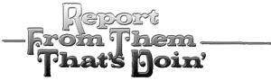
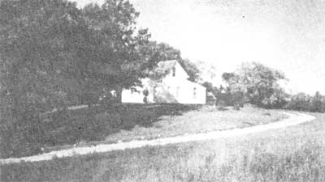

Homesteading In Northern Minnesota
July/August 1973
by BOB AND CAROL KELLY
At last my wife and I have left the ranks of those who read and dream about homesteading and have joined "them that's doin' ". It seems as if we took an extraordinarily long time in realizing our plans, but actually we needed less than three years to get ourselves together ... so that by the fall of 1972 we were able to make the down payment on our farm in northern Minnesota. If you're considering a move of your own, you might like the lowdown on our place and its cost and financing. I remember that when our homestead was in the planning stage we were always interested in such information.
Our land is 80 acres in area, with the front 40 mostly open and the back 40 wooded. The arable half is seeded to alfalfa and timothy. (Hay is the main crop up here since the season is too short for shell corn or soybeans.)
A neighbor who had rented this acreage from the previous owners assured us that no pesticides or commercial fertilizers had ever been used on the place. I don't think this abstinence was really due to an inherent dislike for plastic farming ... it's just that most of the ground in the area has been cleared quite recently-only 30 to 40 years back-and has much of its virgin fertility intact. Also, the climate is not suited to erosion-inducing and humus-destroying row crops such as corn.
The topography is rolling glacial till which has developed a rich clay-loam topsoil. There's also a fairly large peaty patch back in the woods. The clay-loam is good for most of the usual homestead vegetables, as we learned when we saw the previous owner's large, productive garden last year. Sweet corn, tomatoes, peppers, bush beans, potatoes, peas, Brussels sprouts, lettuce, cabbage, raspberries and rhubarb-mostly early varieties especially selected for the short northern season-were all thriving in our rich, dark earth. (One caution: The soils in this area do vary greatly in fertility, and you should become familiar with their types and capabilities if you're planning to look for a farm up here. Much of the land is very thin, with a gravelly substratum near the surface.)
Our woods are fairly typical: mostly second-growth aspen and elm with a liberal mixture of birch, basswood, red maple and red oak. We also have a grove of about 30 white pine, and numerous large balsams are scattered about the forty. The latter evergreens we'll hoard for various building projects. If we cut the trees ourselves and haul them to the sawmill, we can turn them into lumber for only $14.00 per 1,000 board feet. Eight or ten of the big white pines would easily frame up and sheathe a small home, leaving the balance of the grove of graceful giants intact.
Wildlife is quite abundant on our place. Snowshoe rabbits and grouse are the most common small game with a few gray and red squirrels thrown in for good measure. Across the road in Teepee Lake are half a dozen or so beaver lodges. Deer also are fairly numerous ... their trails crisscross the woods and many beds can be found beneath the low-hanging balsams. Most of the natives around here fill their freezers with venison, sometimes out of season and without a license. I'm not so bold, though. There are stiff penalties for the poachers that are caught by the ever-watchful game wardens.
The only birds we've seen so far are the winter residents: Canada jays, blue jays, chickadees, downy woodpeckers, barred owls and the mysterious, eerily croaking ravens. The front forty has several low, wet spots ditched to drain into an even lower area in the woods, and water stands there most of the year as a nesting place for a small population of ducks.
Also, of course, we enjoy the famed fishing of northern Minnesota, where the many lakes and rivers offer a wide variety of high-quality fish to supplement the low-cost diet of the homesteader. The range and abundance of the local wildlife-to my mind an indication of high environmental quality-was an important factor in our decision to settle here.
Our house and outbuildings are located on the front forty up on a little knoll overlooking a gravel road, just opposite a small, utterly undeveloped lake. To the north and west of the buildings there are two or three acres of woods left to break the prevailing winds from those directions.
The house is fairly small, based on an original two-story frame structure with one room upstairs and one downstairs. A later addition gave us two more first-floor rooms and a little enclosed porch on the back. Surprisingly, there's an indoor toilet and bath ... conveniences which still aren't taken entirely for granted in these parts. A rustic trapdoor in the middle of the kitchen floor leads to a crude but serviceable root cellar beneath the house. The place came with a wood-burning cookstove and heater which took us a month or so to learn to use efficiently.
Our outbuildings (also fairly modest, a good size for small-scale home production projects) include a brooder house, woodshed, machine shed, granary and log barn. One odd fact about these structures is that the more easily visible sides are the only ones which are painted and well roofed ... a point we didn't notice until after we'd moved in. (Moral: Take a look at the back of anything you consider purchasing!)
The barn has a cement floor and a small hayloft overhead, and it's scheduled for conversion into a multi-purpose animal shelter like the one described in the HAVE-MORE Plan (see MOTHER NO. 2). Putting all our livestock into one building will help keep them significantly warmer in our bitterly cold winters.
All of the above cost us $8,500 with a down payment of $2,500, or just a hair under the 30% which is fairly standard up here. We have a land contract for the balance with an interest rate of 7-3/4% and installments of $75.00 per month (no penalty for paying up early). Some agreements call for rates as low as 6%, while others go all the way to 8%.
Those figures may sound higher than rates you've heard quoted for this area ... but remember, land prices are going up very rapidly. In fact, the folder in which the realtor had our place listed priced it at $16,500! When we said we could go only to $8,000, however, the agent came down a total of $8,000 to the selling price of $8,500. This may have happened because we came out after Labor Day when the tourists had gone home and the area had quieted down considerably. Or the owner may just have needed the money in a hurry when we were there on the spot. In any case, don't be afraid to dicker.

A cheaper way to get land is simply to buy unimproved timber acreage, usually sold in 40-acre parcels without buildings. Right now such tracts are running between $3,000 and $4,000 from the local representatives of national real estate companies that buy large farms for speculation. The tracts can be had for low down payments but at quite high rates of interest.
Undeveloped property doesn't give you a place to move to immediately, of course, but at least you've got the land ... and lack of improvements may suit the many people who plan ultimately to build some dwelling more compatible with sound ecology than the standard, white frame farmhouse. At least you don't have to pay for something you may be tearing down later.
The "back tax" land scene around here is not really as good as one might be led to believe. With the recent great leap in this area's property values, people seem more willing to keep up on their taxes ... especially since the rates are so low (only $52.47 on our farm this year). Another trouble with back-tax acreage is that much of it is inaccessible by road so that-once you get your place-you have to build a way in. This can be expensive.
Another possibility for homesteading is the large amount of unimproved county land scattered in parcels among the privately owned farms. In our county (Beltrami) an owner of adjacent property can buy such acreage rather cheaply ... usually for $8.00 per acre plus the assessed value of any timber on the tract. Thus one could buy a forty lying next to county land and double his holding for $1,000 or less. (I don't know why such transactions are restricted to owners of adjoining plots.) If you like this idea, you should contact the land commissioner of the county you're interested in for more specific information.
I'll close with a few suggestions which might make your Minnesota property-hunting easier. First, every county has rather detailed maps that show all roads, trails, streams, lakes, building sites, fire towers, etc., within its boundaries. These documents can be obtained at the various county courthouses, usually for a charge of 25 cents. Plat maps giving individual property lines and owners' names are likewise available, at 50 cents a copy, for each township within a county. Such charts make it much easier to pinpoint and locate land in which you're interested.
If you have plenty of time to hunt for a place, try asking around on your own out in the country about property that may be for sale. Stop in at the rural stores, gas stations and taverns and let the proprietors know that you're looking for land. Occasionally they'll know of relatives or friends who are selling farms.
Often a deal you turn up on your own will be somewhat less expensive than if the offer had been listed by the realtors in town. We've heard of 40-acre spreads going for as low as $2,000 when sold privately, whereas similar parcels handled by real estate agents run at least $1,000 to $2,000 more. Of course, though, to find such buys you've got to get out and do your own digging. Also, realtors around here are friendly and helpful and provide expertise in the details of finalizing a sale, so there are advantages to both methods of locating property.
Finally, we'd advise you to make your decision to buy as soon as possible. As we've said, the price of land is spiraling upward. Our own place was bought and sold twice in the last two years and jumped $1,000 in cost each time. As we look at the next five years it's not difficult to foresee the price of small farms and acreages going up out of reach of homesteaders who would actually live on their holdings. That development would leave the countryside in the hands of the comparatively well-off weekend snowmobilers and the grasping land speculators.
That's about all we can pass on about the local land situation. Good hunting ... and stop in and visit for a spell if you're in the Bemidji area looking for a homestead.
Bob & Carol Kelly
Pinewood, Minnesota 56664
|
 |
 |
|